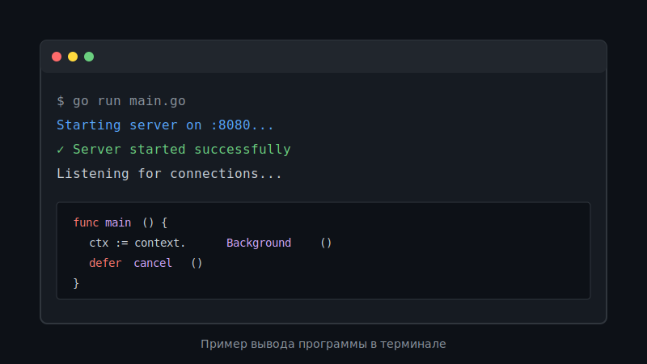

В Go пакет context помогает ограничить время выполнения и отменять операции. Это один из ключевых инструментов для работы с конкурентностью в Go, который позволяет контролировать время жизни горутин и передавать сигналы отмены между ними.
Зачем нужен context?
Context решает несколько важных задач:
- Установка таймаутов для операций
- Отмена долгих операций по требованию
- Передача значений между функциями (хотя это нужно использовать осторожно)
- Координация работы множества горутин
Базовый пример
Рассмотрим простой пример использования context.WithTimeout для ограничения времени выполнения операции:
package main
import (
"context"
"fmt"
"time"
)
func main() {
ctx, cancel := context.WithTimeout(context.Background(), 2*time.Second)
defer cancel()
done := make(chan struct{})
go func() {
time.Sleep(1500 * time.Millisecond)
fmt.Println("work done")
close(done)
}()
select {
case <-done:
fmt.Println("ok")
case <-ctx.Done():
fmt.Println("timeout:", ctx.Err())
}
}В этом примере мы создаем контекст с таймаутом в 2 секунды. Горутина завершает работу за 1.5 секунды, поэтому программа успевает обработать результат до истечения таймаута.
При запуске программы вы увидите следующий вывод:
Типы контекстов
Go предоставляет несколько функций для создания контекстов:
context.Background()
Базовый контекст, используется как корневой контекст в main функции или при инициализации.
ctx := context.Background()context.WithTimeout
Создает контекст, который автоматически отменяется через указанное время.
ctx, cancel := context.WithTimeout(parent, 5*time.Second)
defer cancel()context.WithCancel
Создает контекст, который можно отменить вручную в любой момент.
ctx, cancel := context.WithCancel(parent)
// Позже, когда нужно отменить
cancel()context.WithDeadline
Похож на WithTimeout, но принимает конкретное время вместо длительности.
deadline := time.Now().Add(10 * time.Second)
ctx, cancel := context.WithDeadline(parent, deadline)
defer cancel()Практический пример с HTTP запросом
Вот более практичный пример использования контекста для HTTP запроса с таймаутом:
func fetchData(ctx context.Context, url string) error {
req, err := http.NewRequestWithContext(ctx, "GET", url, nil)
if err != nil {
return err
}
client := &http.Client{}
resp, err := client.Do(req)
if err != nil {
return err
}
defer resp.Body.Close()
// Обработка ответа...
return nil
}
func main() {
ctx, cancel := context.WithTimeout(context.Background(), 3*time.Second)
defer cancel()
if err := fetchData(ctx, "https://api.example.com/data"); err != nil {
log.Printf("Request failed: %v", err)
}
}Важные правила
Всегда вызывайте функцию cancel, полученную при создании контекста, чтобы освободить ресурсы. Используйте defer cancel() сразу после создания контекста.
Другие важные моменты:
- Не храните контекст в структурах - передавайте его как первый параметр функции
- Не передавайте nil контекст - используйте
context.Background()илиcontext.TODO() - Используйте контекст для передачи только request-scoped данных
- Context безопасен для использования из нескольких горутин одновременно
Заключение
Пакет context - это мощный инструмент для управления жизненным циклом операций в Go. Правильное использование контекста помогает писать более надежный и предсказуемый код, особенно в высоконагруженных системах.
Для более глубокого понимания рекомендую изучить официальную документацию и блог пост от команды Go.